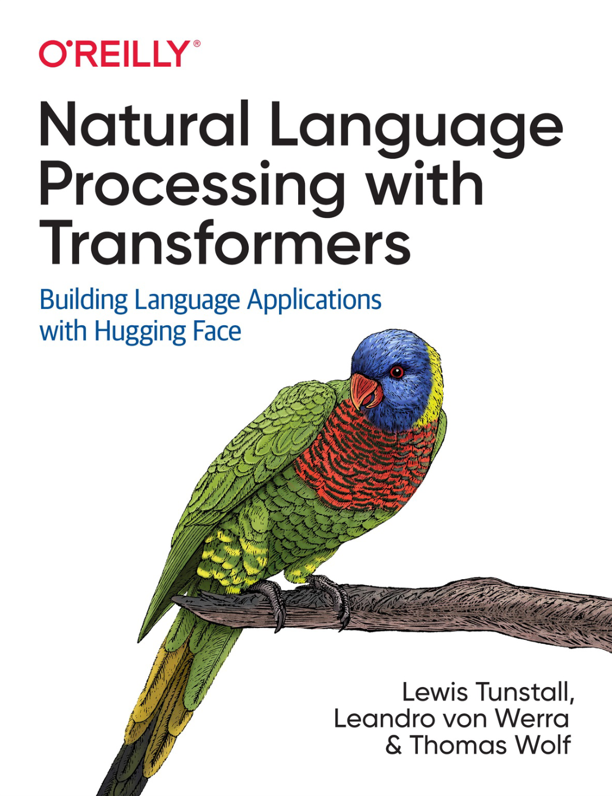

Natural Language Processing with Transformers: Building Language Applications with Hugging Face
用Transformers处理自然语言：创建基于Hugging Face的文本内容处理程序
Lewis Tunstall, Leandro von Werra, and Thomas Wolf （Hugging face Transformer库作者 , 详情：作者介绍）
《Hands-on Machine Learning with Scikit-Learn and TensorFlow》作者 Aurélien Géron 撰写前言。

序
第1章 "Hello，Transformers"
介绍了Transformers并将其置于背景之中。 它还提供了一个关于 "Hugging face"生态系统的介绍。
第2章 文本分类
重点是情感分析的任务（一个常见的文本分类问题），并介绍了Trainer API。
第3章 Transformers架构剖析
更深入地探讨Transformer架构，为后面的章节做准备。
第4章 多语言命名实体识别
侧重于识别多语言文本中的实体的任务（一个标记分类问题）。
第5章 文本生成
探讨了Transformers模型生成文本的能力，并介绍了解码策略和度量。
第6章 文本摘要
挖掘了文本摘要的复杂的序列-序列任务，并探讨了用于这一任务的指标。
第7章 问答系统
主要是建立一个基于评论的问题回答系统，并介绍了用Haystack进行检索的情况。
第8章 优化Transformers性能
重点是模型性能。 我们将研究意图检测的任务（一种序列分类问题），并探索知识蒸馏、量化和剪枝等技术。
第9章 处理少标签或无标签任务
探讨了在没有大量标签数据的情况下提高模型性能的方法。 我们将建立一个GitHub问题标注器，并探索诸如零样本分类和数据增强等技术。
第10章 从零开始训练Transformers
告诉你如何从零开始建立和训练一个用于自动进行Python源代码补全的模型。 我们将研究流式数据集和大规模训练，并建立我们自己的标记器（tokenizer)。
第11章 未来发展方向
探讨了Transformers所面临的挑战和该研究领域的一些令人兴奋的新方向。